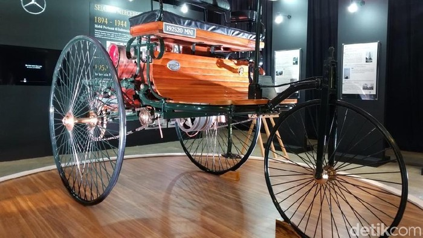

Di urutan pertama tentu nama ini wajib disebutkan. Karl Benz membangun mobil pertamanya pada tahun 1885 dan ia mematenkannya pada Januari 1886. Nama Mercedes sebenarnya belum digunakan hingga tahun 1901. Mobil itu dulunya disebut Patent Motorwagen. Mobil pertama Benz ini hanya memiliki 3 roda dan mengusung mesin satu silinder 954 cc yang mampu mengasilkan tenga 0,75 bhp. Pada tahun 1893 Benz pertama kali membuat mobil dengan empat roda yang diberi nama Viktoria. Viktoria ditenagai mesin 1745 cc bertenaga 3 bhp
Muhamad Rizki Fadilah
10123085
iF-3